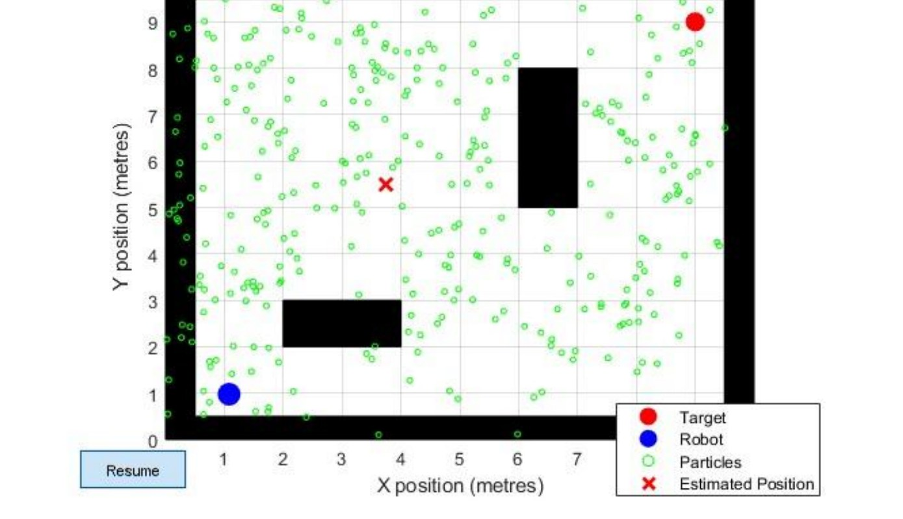
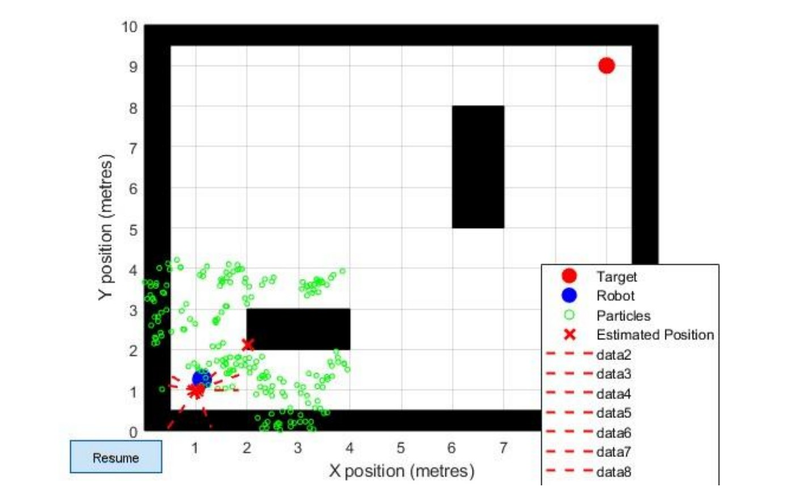
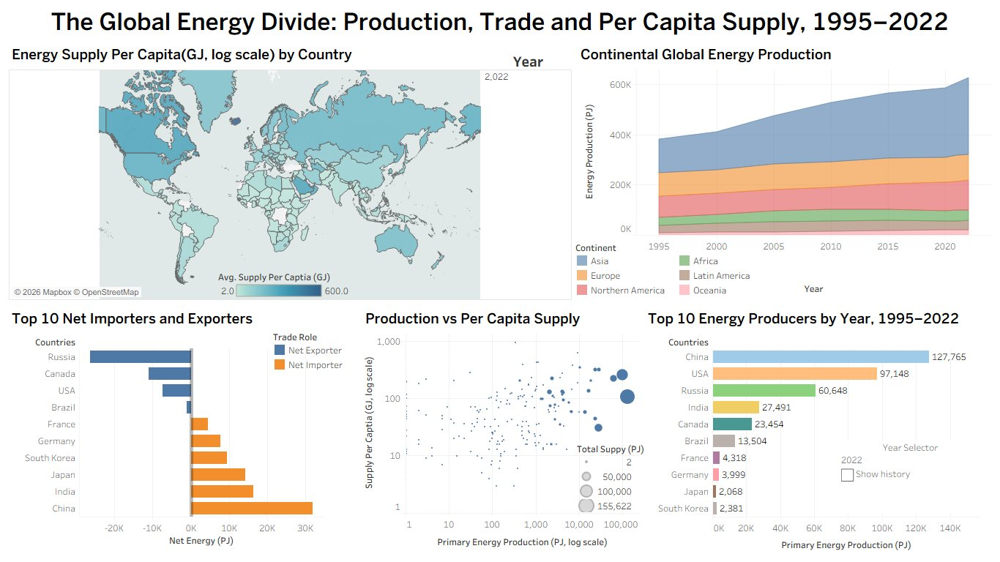
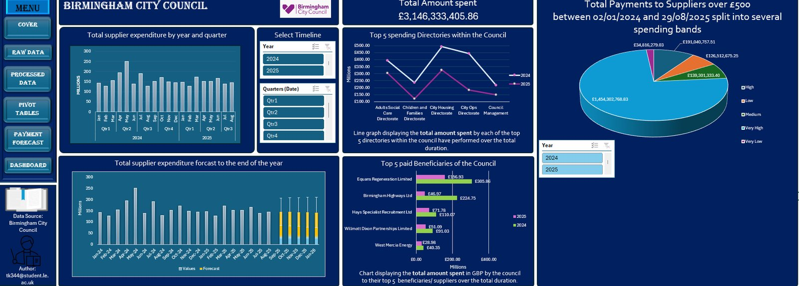
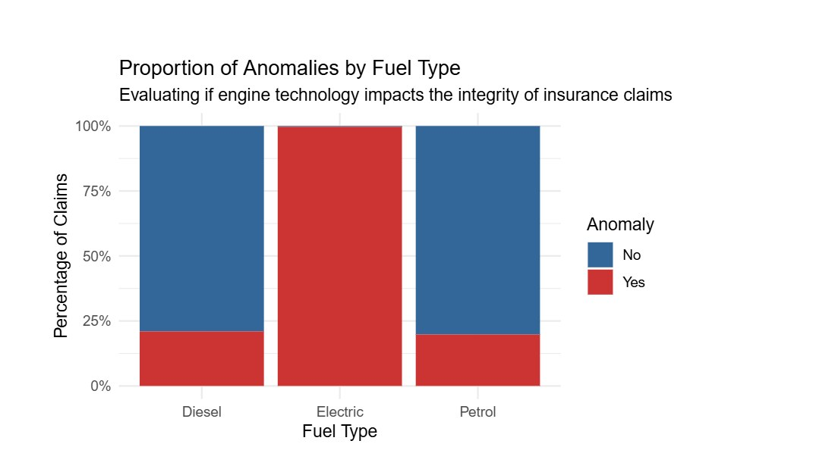
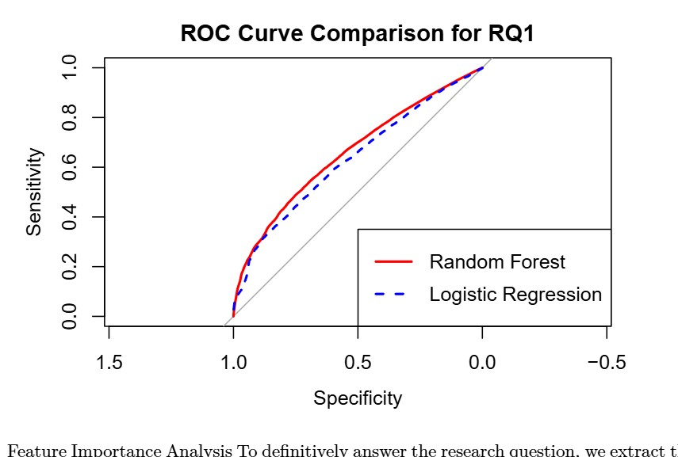
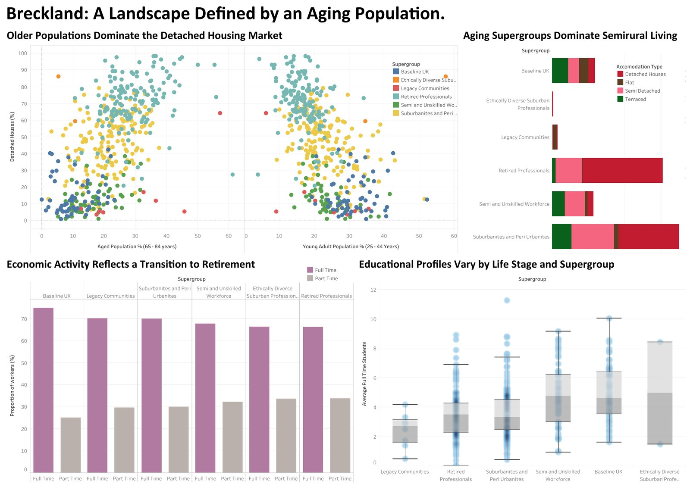

Nine projects, grouped by track. Where a project produced a report, dashboard or dissertation, it is attached so you can check the description against what was actually built.
Engineering
Embedded systems, robotics and full-stack development
June - September 2026 · MSc dissertation, group of four · Commissioned by AB Analytics Ltd
RoadAid: Vehicle Recovery and Roadside Assistance Platform
The platform running end to end: the client app on the left and the operator app on the right, from request through dispatch and live tracking to rating and job summary. Recorded for our final presentation, 1 minute 23 seconds, no sound.
Roadside recovery in Addis Ababa is coordinated largely by phone, and the delay between a breakdown and a competent operator arriving carries real risk: the World Health Organization put Ethiopia at an estimated 25.3 road traffic deaths per 100,000 people in 2018. Our brief was to replace that manual coordination with something automated, and to do it under the constraints the city actually imposes, including patchy OpenStreetMap coverage, mobile money rather than cards, and Amharic alongside English.
The team built on Depannini, an open-source roadside assistance codebase, and added an automated dispatch engine. Single incoming requests are matched by nearest-neighbour search across operators filtered by activity and service type. Requests arriving inside the same batch window are solved together with the Hungarian algorithm over a request-to-operator cost matrix, which produces a globally optimal set of assignments rather than a greedy one. Urgent jobs receive a continuous priority weighting, and the most critical bypass the batch entirely. When an operator declines or an offer times out, the request cascades automatically to the next eligible operator. Batch assignment runs under row-level locking so that two operators cannot be given the same job under load.
My individually assessed share was the client-facing layer. I built the cancellation policy and its fee model, the fare and earnings screens including the platform commission and settlement view, the job history and job summary screens, bilingual English and Amharic localisation with a currency toggle, and validation for Ethiopian country codes and phone number formats. The platform is deployed on Railway with a managed PostgreSQL database.
The dissertation is attached in full. It is candid about what was not delivered: demand-aware pricing and two-factor authentication were designed but never implemented, and the concurrency locking cannot be verified against SQLite, so both sit in the future work chapter rather than the results.
2023/24 · BEng Embedded Systems Project · Team project, mark 79
Autonomous Line-Following Buggy
Tools: C, STM32, Altium Designer
The finished buggy on the track, with the control and driver boards stacked above the chassisThe project team on demonstration day
A self-contained autonomous vehicle that detects and follows a track without intervention. I wrote the microcontroller firmware in C for the STM32 platform, covering sensor sampling, the control loop that translates line position into differential motor commands, and the motor driver interface. I also designed the control PCB in Altium, taking it from schematic capture through to layout and manufacture.
I led the team through integration and testing, which was where most of the difficulty lay. Individually sound subsystems behaved differently once combined, and tuning the control response so the buggy held the line through tight curves without oscillating took repeated iteration against a physical track rather than in simulation. The project carried double the credit weighting of a standard module, was assessed at 79, and placed in the top 10 of 50 teams.
C
STM32
embedded firmware
Altium
PCB design
control loops
team leadership
2024/25 · BEng Individual Project · Mark 65
Robot Localisation Using a Particle Filter
Tools: MATLAB, C++

Figure 1 from the dissertation: the simulated environment at initialisation, with particles spread uniformly because the filter has no information yet

Figure 7: lidar beams cast in all directions, with the particle cloud now converged on the robot's actual position
An implementation of particle filter localisation, the problem of working out where a robot is inside a map it already has, using noisy sensor readings and an imperfect model of its own motion. The filter maintains a population of hypotheses about the robot's pose, propagates them through the motion model, weights each one by how well it explains the latest sensor reading, and resamples so that probability mass concentrates where the evidence points.
The two figures above show that process at its start and its end. In the first, the robot has just been switched on and the particles are spread evenly across every part of the floor plan, because at that point any of them could be right. In the second, the lidar has cast its beams, obstacle distances have been compared against the map, and the cloud has collapsed into a tight cluster around the robot's true position. The distance between those two states is the whole of what the filter does.
The interesting failures are the instructive ones. Too few particles and the filter loses the true pose entirely, while resampling too aggressively collapses the population onto a single wrong hypothesis it can never recover from. The dissertation quantifies both, along with the effect of lidar range, sensor noise and four different resampling strategies. The code is published as a bank of MATLAB examples that illustrate the mechanism step by step rather than as a single black box.
Visualisation, statistical modelling and applied analysis
2025/26 · MSc Information Visualisation · Individual coursework
The Global Energy Divide
Tools: Tableau, UN Energy Statistics Yearbook

The assembled dashboard, covering 1995 to 2022
An interactive dashboard examining the gap between where energy is produced and where it is consumed, built from United Nations energy statistics covering 235 countries between 1995 and 2022. Five coordinated views answer different halves of the question: a choropleth of supply per capita on a log scale, a stacked area chart of production by continent over time, a diverging bar chart separating the ten largest net exporters from the ten largest net importers, a log-log scatter plot of production against per capita supply with total supply encoded as point size, and a ranked bar chart of the largest producers driven by a year selector.
Most of the work was in the decisions that are invisible when the dashboard behaves. Raw supply per capita is so skewed that a linear colour scale renders almost every country the same shade, so the scale is logarithmic and clamped, with Greenland excluded as an outlier that would otherwise absorb the entire range. Palettes are colourblind-safe throughout. A single year parameter drives several sheets at once, so the map, the ranking and the scatter always describe the same moment. The accompanying essay sets out the grammar-of-graphics reasoning behind each encoding choice.
2025/26 · MSc Excel for Data Science · Individual coursework
Birmingham City Council Budget Distribution Dashboard
Tools: Excel, Power Query, PivotTables, XLOOKUP, exponential smoothing

The navigable dashboard, with slicers for year and quarter
An audit-oriented analysis of every payment Birmingham City Council made to a supplier above £500 between January 2024 and August 2025: roughly 6,000 suppliers and £3,146,333,405.86 of expenditure. The source extract was messy enough that cleaning was the bulk of the work, running to around 88,000 text corrections through Power Query before any analysis was trustworthy.
From there the model uses XLOOKUP to assign each payment to a spending band, pivot analysis to surface concentration by directorate and by supplier, and exponential smoothing with a 95% confidence interval to project expenditure to the end of the financial year. The findings point somewhere specific. Spending is heavily concentrated: a single band accounts for £1.45bn of the total, and Equans Regeneration Limited alone received roughly £463m across the two years, ahead of Birmingham Highways, Hays Specialist Recruitment, Willmott Dixon Partnerships and West Mercia Energy. The dashboard closes with audit-priority recommendations drawn from that concentration.
The whole workbook is navigable rather than static, with a menu, slicers on year and quarter, and a documented audit trail recording every transformation applied to the raw data.
2025/26 · MSc Modelling Data · Individual coursework, two assessed tasks
Automotive Risk and Repair Cost Modelling
Tools: R, caret, rpart, randomForest, pROC, ggplot2, Quarto

Anomaly rate by fuel type, the finding that reframed the modelling

ROC comparison: random forest against logistic regression, both close to the chance diagonal
A two-part study of 268,255 motor insurance claim records, each carrying vehicle specification, repair cost, labour hours, repair complexity and a flag marking whether the claim was treated as anomalous. The first task was exploratory: assessing data quality, characterising the heavy right skew in repair costs, and profiling where anomalies concentrate. The second built predictive models on top of it.
The exploratory work surfaced the signal the modelling then chased. Repair cost relative to a vehicle's market value, rather than repair cost alone, separates plausible claims from implausible ones, since a four thousand pound repair means something very different on a sixty thousand pound car than on a five thousand pound one. Labour rate distributions by manufacturer showed padding signatures, with premium marques carrying rates that inflate faster than parts costs justify. Most striking, and visible above, almost every electric vehicle claim in the dataset was flagged as anomalous, against roughly twenty per cent for petrol and diesel.
That last result is the one worth being careful about. Taken at face value it suggests electric vehicles attract fraud. Taken sceptically it suggests the anomaly flag itself was calibrated on combustion vehicles and mislabels an unfamiliar cost profile, which would penalise electric vehicle owners for driving a newer technology. The report argues the second reading and treats the finding as a warning about the label rather than a discovery about drivers.
Modelling used logistic regression with down-sampling to handle severe class imbalance, alongside decision trees, random forests and K-means clustering, evaluated by ROC and AUC rather than accuracy, which class imbalance renders meaningless. The assessment also required an equality, diversity and inclusion review of the models, checking whether predictions would unfairly penalise communities already exposed to higher road fatality rates.
The second figure is the one that decided how the whole study should be read. Plotting both models on the same ROC axes returned an area under the curve of 0.659 for the random forest and 0.633 for the logistic regression. A perfect classifier scores 1.0 and a coin toss scores 0.5, so both curves sit much closer to chance than to competence. Two things follow. The narrow gap between them says the relationship is not strongly non-linear, since the flexible model barely outperformed the linear one, so no amount of additional model complexity was going to rescue this. And the low absolute figures say the features available simply do not separate anomalous claims from legitimate ones.
That is the empirical support for the argument made earlier about electric vehicles. If the anomaly flag captured genuine fraud, a random forest given vehicle value, age, repair cost, labour rate and complexity ought to have found considerably more signal than this. A weak curve is consistent with a label that is inconsistently applied rather than a pattern the model failed to see. Reporting that honestly, rather than presenting 0.659 as a working fraud detector, is the conclusion the evidence actually supports.
2025/26 · MSc Information Visualisation · Individual coursework
Breckland: A Landscape Defined by an Aging Population
Tools: Tableau, 2021 Output Area Classification, UK census data

Four coordinated views built on the 2021 Output Area Classification
A small-area demographic study of Breckland in Norfolk, built on the 2021 Output Area Classification, which assigns every output area to a supergroup describing the kind of population that lives there. The dashboard argues a single claim across four views: that Breckland's housing, work and education patterns are shaped primarily by age.
Paired scatter plots set detached housing share against the 65 to 84 population and then against the 25 to 44 population, and the relationship reverses between them. A stacked bar breaks accommodation type down by supergroup, showing Retired Professionals concentrated in detached housing while the Semi and Unskilled Workforce cluster in terraced and semi-detached stock. Economic activity is split full time against part time by supergroup, and box plots with the underlying points overlaid compare educational profiles. Using distributions rather than means was deliberate: the supergroup averages are close enough that bar charts of the same data would suggest a uniformity the spread does not support.
Functional data analysis treats each observation not as a number but as a curve, which suits incidence rates that vary smoothly across age. Working with the Cancerrate dataset, each calendar year becomes a single curve describing incidence across the age range, and the question becomes whether those curves change systematically over time.
The analysis smooths the raw rates with B-spline bases, applies functional principal component analysis to identify the dominant modes of variation between years, and then fits a functional linear regression with calendar year as the predictor, testing the fit with a permutation F-test rather than relying on distributional assumptions that functional data rarely satisfy.
The permutation test failed to reject the null hypothesis. On this dataset, calendar year does not predict the age-specific rate profile to any degree the evidence supports. Reporting that plainly, rather than searching for a specification that would produce a significant result, is the honest reading, and the write-up says so.
2025/26 · MSc Overview of Data Science Practice · Group project
GDP and Life Expectancy: A Reproducible Group Analysis
Tools: R, Quarto, Git, World Bank data
A team project examining the relationship between national income and life expectancy, using World Bank indicators. The analysis itself is well-trodden ground, which was rather the point: the module was concerned with how data science is practised rather than which model wins, so the assessment fell on provenance, data quality, reproducibility and collaboration.
The work was version controlled in Git and written as a Quarto project that rebuilds end to end from the raw sources, with an explicit assessment of where the indicators come from, how completely they cover the countries and years in question, and which conclusions the gaps will not support. Reflective reports accompanied each stage. It was my strongest module mark of the MSc, at 88.